번역 안내. 클래스·스킬·탤런트 이름 등 고유명사는 인게임 검색을 위해 영어 그대로 두었고, 설명만 한글로 옮겼습니다.
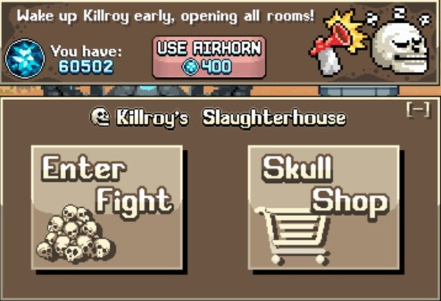
Killroy 기본 & 팁
Killroy는 처음에 World 2에서 해금되지만, Skull Shop에서 구입할 수 있는 아이템 덕분에 게임 전반에 걸쳐 중요합니다. 작동 방식은 다음과 같습니다.
- 주간 초기화: Killroy는 계정 주간 초기화와 동시에 리셋됩니다. 주간 리셋 시 저장된 해골이 모두 삭제되므로, 매주 Skull Shop의 해골을 반드시 모두 사용하세요.
- 젬 리셋: 주당 한 번, 400 젬을 소모해 Killroy를 수동으로 초기화하면 같은 방들을 다시 도전해 추가 해골을 얻을 수 있습니다.
- 방(Rooms): 도전 방은 일반 몬스터 맵과 동일하게 적이 등장하며, 특정 클래스 유형(초보자, 전사, 궁수, 마법사)으로 완료해야 합니다.
- 처치 카운터: 각 방에는 처치 카운터가 있습니다. 이 수치는 받는 해골 수에는 영향을 주지 않지만, Equinox Valley(World 3)의 특정 처치 수 도전과 관련이 있습니다. 또한 Rift 51(World 4)의 Killroy Prime 보너스는 하이스코어 처치 수를 기반으로 데미지량을 높여줍니다.
- 추가 방: Killroy는 처음에 방이 하나뿐입니다. 두 번째 방은 World 4에 도달하면 해금되고, 세 번째 방은 Rift 51(World 4)에서 Killroy Prime에 도달한 뒤 Skull Shop에서 1% 확률로 구매할 수 있습니다.
- 몬스터 드롭: 몬스터는 처음에 Killroy 해골과 탤런트 포인트 리본을 드롭합니다. World 3 Equinox Valley 업그레이드 이후에는 던전 크레딧(Dungeon Credits)이나 진주(Pearls)도 드롭할 수 있습니다.
- Killroy 업그레이드: 도전을 완료한 후 다음 시도를 위한 영구 업그레이드를 하나 올릴 수 있습니다. 초기 업그레이드는 +1초 타이머, 탤런트 드롭, 보너스 해골입니다. Equinox Valley(World 3)를 통해 빠른 리스폰, 던전 드롭, 진주 드롭이 추가로 해금됩니다.
- Skull Shop: 방에서 몬스터가 드롭하는 해골로 소모성 아이템이나 계정 업그레이드를 구매할 수 있습니다. 새로운 상점 옵션은 The Rift와 World 7(Plastic Basin 맵)에서 해금됩니다.
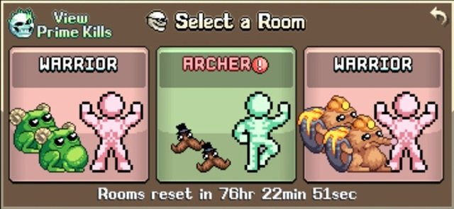
Killroy 최고의 클래스
| 유형 | 추천 클래스 경로 | 비고 |
|---|---|---|
| Warrior | Squire | Squire와 이후 상위 직업은 강력한 광역 공격을 여럿 보유합니다. World 3에서 Squire를 해금하기 전에는 Barbarian이 최선의 선택입니다. |
| Archer | Bowman → Hunter가 Beast Master로 전직할 때까지 | Hunter가 Beast Master로 승급해 더 넓은 광역 잠재력을 갖추기 전까지는 Bowman의 광역 공격이 더 우수합니다. |
| Mage | Shaman | Shaman 경로는 우수한 광역 공격을 보유합니다. |
| Beginner | 보유한 Beginner, Journeyman, Maestro, Void Walker 중 아무나 | 이 방에는 다른 선택지가 없습니다. |
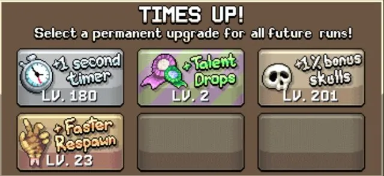
Killroy 최고의 업그레이드
Killroy 업그레이드는 매주 얻는 해골 수에 직접 영향을 미치며, 업그레이드를 초기화하는 방법은 없습니다. 다음 우선순위를 권장합니다.
- 해금된 6가지 업그레이드 전부에 최소 1포인트씩 투자하세요.
- Timer를 레벨 160까지 올리세요. 기본 타이머 100초에 추가로 160초가 더해져 총 260초의 도전 시간이 확보됩니다. 추가 몬스터 스폰이 250초 이후 멈추므로, 10초의 여유를 두고 몬스터 스폰을 최대화할 수 있습니다. 몬스터는 그 이후에도 스폰되지만 속도가 급격히 줄어들기 때문에 이 시점이 시간 효율상 이상적인 중지 지점입니다. Timer를 먼저 올리면 Equinox Valley(World 3) 도전 완료를 막는 장벽도 해결됩니다.
- Bonus Skulls와 Respawn을 균등하게 올리세요. 두 업그레이드 모두 해골 보상을 늘립니다. Equinox Valley 도전 완료에 여전히 어려움을 겪고 있다면 처치 수 기준이 포함된 경우 초기에는 리스폰을 우선하세요.
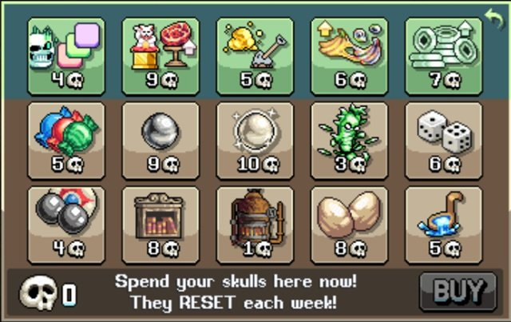
Skull Shop 최고의 구매 목록
아래는 Skull Shop에서 구매하도록 권장하는 항목입니다. 다만 Idleon 진행 상황에 따라 유용한 구매 시점이 다르고 일부는 후반에 해금되므로, 본인 계정 상황에 맞게 조정하세요.
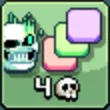
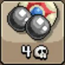
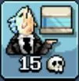
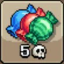
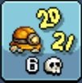
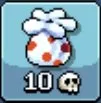
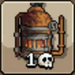
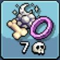
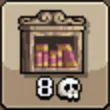
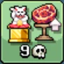
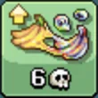
| Skull Shop 항목 | 설명 | 등급 평가 & 비고 |
|---|---|---|
| 3rd Killroy Weekly Fight | 세 번째 Killroy 주간 전투를 영구적으로 해금할 1% 확률! | S 등급 – Killroy 도전 횟수를 늘립니다. |
| Arcade Balls | 공 6개 획득! 아케이드에 바로 추가됩니다! | S 등급 – 다양한 계정 업그레이드에 사용되는 젬을 제공합니다. 매주 상한이 있으므로 다른 상점 아이템보다 반드시 먼저 구매하세요. |
| Gallery | World 7의 갤러리 등급이 +1 오를 5% 확률! | S 등급 – 가장 강한 트로피의 추가 등급을 해금합니다. 등급 상승 후에는 갤러리 배수를 높이며, 최소 0.08x(구매 800회)를 목표로 하고 이후 0.09x(추가 1,000회, 총 1,800회)까지 도전하세요. |
| Time Candy | 무작위 Time Candy 1개 획득! 바닥에서 주우세요. | A 등급 – 초반에는 다양한 전투·스킬링 목표에 유연하게 활용 가능합니다. 후반에도 스킬링 레벨, 초록 버섯 처치 수, 신전 레벨 등을 올리는 데 유용합니다. |
| World 7 EXP | 모든 World 7 스킬의 경험치 획득 영구 증가 | A 등급 – 레벨 올리기 어렵지만 강력한 계정 업그레이드를 제공하는 World 7 스킬 진행에 도움이 됩니다. |
| Coral Boost | 일일 산호 획득량 영구 증가 | A 등급 – 강력하지만 다른 산호 소스도 충분히 있는 World 7 산호 버프 구매 속도를 높입니다. |
| Refinery | 정제 사이클 1회 즉시 자동 완료! | A 등급 – 초기 정제 진행의 병목을 해소합니다. 정제 속도가 빨라지고 제작에 소금이 더 이상 필요 없는 후반에는 효과가 줄어듭니다. |
| Masterclass | 마스터클래스 드롭 영구 증가 | B 등급 – 마스터클래스(Arcane Cultist, Wind Walker, Death Bringer) 자원 획득률을 높여 계정 부스트 획득 시간을 단축합니다. 유용한 스탯이지만 연금술 등 다른 소스에 비해 Killroy 배수 효과는 작습니다. |
| Library Checkouts | 도서관 체크아웃 2회 획득! 바로 도서관에 추가됩니다! | B 등급 – 핵심 탤런트 레벨 상승 및 World 3 체크아웃 업적에 도움. 체크아웃 속도가 빨라지거나 탤런트가 이미 최대치에 가까운 후반에는 효과가 줄어듭니다. |
| Artifact Find Chance | 아티팩트 발견 확률 영구 증가! | C 등급 – World 5 Sailing의 게임 체인저급 아티팩트 수집을 앞당깁니다. 그러나 모든 아티팩트를 수집하면 더 이상 가치가 없고 다른 아티팩트 확률 소스도 충분합니다. |
| Crop Evolution Chance | 작물 진화 확률 영구 증가! | C 등급 – 다양한 계정 부스트를 제공하는 World 6 파밍 스킬의 핵심인 작물 진화에 유용합니다. 하지만 모든 작물 진화를 완료하면 가치가 사라지며 다른 소스도 충분합니다. |
| Black Pearl | 검은 진주 1개 획득, 스킬 경험치 제공! 바닥에서 주우세요. | C 등급 – 모든 캐릭터 스킬 레벨 30 미달 시 유용하며 특히 Maestro 클래스 해금에 효과적이지만, 그 이후에는 쓸모없습니다. |
| Jade Gain | 옥(Jade) 획득량 영구 증가! | D 등급 – Jade Emporium이나 Pristine Charms를 통한 계정 부스트가 많은 World 6 잠입 스킬을 빠르게 진행하지만, Jade는 눈에 띄는 병목 요소가 아닙니다. |
| White Pearl | 흰 진주 1개 획득, 클래스 경험치 제공! 바닥에서 주우세요. | D 등급 – 초반 레벨 획득 속도를 높여 진행에 도움을 줍니다. |
| Crystal Mob Spawn | 다음 처치 시 크리스탈 몬스터 1마리 소환! 오늘 만료됩니다! | D 등급 – 드롭 파밍이나 퀘스트 완료를 위해 크리스탈 몬스터를 빠르게 소환하는 방법이지만, 후반에는 크리스탈 몬스터가 충분히 자주 스폰됩니다. |
| Shovel Nugget | Gaming의 삽에 너겟 1개 추가, 가서 캐세요! | F 등급 – World 5 Gaming에 너겟 확률을 조금 더해주지만 비용 대비 효과가 너무 미미합니다. |
| Pet Eggs | 펫 알 2개 획득! 바닥에서 주우세요. | F 등급 – World 4 브리딩에 사용되지만 같은 월드의 미니 보스나 콜로세움에서 쉽게 얻을 수 있습니다. |
| Kitchen Ladles | 주방 국자 3개 획득! 바닥에서 주우세요. | F 등급 – 위와 마찬가지로 같은 월드의 미니 보스나 콜로세움에서 쉽게 얻을 수 있습니다. 국자 3개는 AFK 시간 절약량도 매우 적습니다. |
| Dungeon Loot Dice | Dungeon Loot Dice 1개 획득! 바닥에서 주우세요. | F 등급 – Party Dungeons를 직접 플레이하면 쉽게 얻을 수 있습니다. |
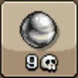
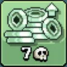
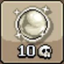
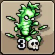
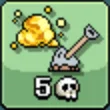
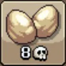
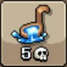
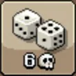